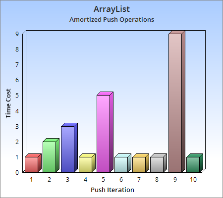
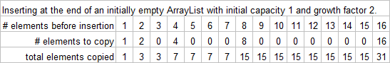

ArrayList vs ArrayDeque vs LinkedList: which one is best?
It depends what you're doing. Each one has advantages and disadvantages.Accessing an element by index
- ArrayList: O(1).
- ArrayDeque: The JCF implementation does not allow accessing elements by index (C++ deques allow this operation, and it's O(1)).
- LinkedList (doubly-linked): Worst-case O(n) for elements in the middle. Elements close to the front or back are accessed faster.

Runtime per push operation
Source: wikipedia.org
Insertion/deletion by index
- ArrayList: Worst-case O(n) because you have to shift elements.
Insertion/deletion at the end is faster because there are fewer elements to shift.
If you insert when the Arraylist is full, you have to copy the elements into a new larger array, which is O(n).
- Insertion at the end of an ArrayList takes amortized constant time. This means that a sequence of n insertions into an initially empty ArrayList has a worst-case runtime of O(n), so the average runtime per insertion is O(1), although some insertions may be slower. This is achieved by always increasing the array size by a constant factor, because the total number of elements copied is the sum of a geometric series.
- ArrayDeque: Deletion at the front or back is O(1), and insertion at the front or back takes amortized constant time. The JCF implementation does not allow insertion/deletion by index (if it was allowed, it would be worst-case O(n) because of shifting).
- LinkedList (doubly-linked): Insertion/deletion at the front or back is worst-case O(1). Insertion/deletion by index is worst-case O(n) because you have to traverse the list to find the correct spot. If you have an iterator at the correct spot, insertion/deletion is O(1).

Space
A LinkedList uses more space per element because it has 2 pointers per node.However, an ArrayList or ArrayDeque may have unused elements (if the capacity is larger than the size).
Summary
Sometimes it is difficult to predict which one is best without testing, but here are a few tips:- Use an ArrayList if you need to access elements by index and you only need to insert/delete at the end.
- Use an ArrayDeque as a stack, queue, or deque.
- Use a LinkedList if you need to insert/delete while iterating through the list, or if you need insertion at the ends to be worst-case O(1).